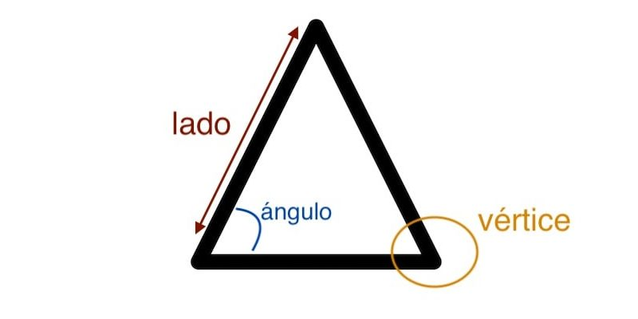

....Los triángulos o trígonos son figuras geométricas planas, básicas, que poseen
tres lados en contacto entre sí en puntos comunes denominados vértices. Su
nombre proviene del hecho de que posee tres ángulos interiores o internos,
formados por cada par de líneas en contacto en un mismo vértice.
Estas figuras geométricas se nombran y clasifican de acuerdo a la forma de sus
lados y al tipo de ángulo que construyen. Sin embargo, sus lados son siempre
tres y la suma de todos sus ángulos siempre dará 180°.
Los triángulos han sido estudiados por la humanidad desde tiempos inmemoriales,
ya que han estado asociados a lo divino, a los misterios y a la magia. Por eso,
es posible hallarlos en muchos símbolos ocultistas (masonería, brujería, cábala,
etc.) y en tradiciones religiosas. Su número asociado, el tres (3),
numerológicamente alude al misterio de la concepción y a la vida misma.
En la historia del triángulo la antigüedad griega merece un lugar destacado.
El griego Pitágoras (c. 569 – c. 475 a.C.) propuso su célebre teorema para los
triángulos rectángulos, que reza que el cuadrado de la hipotenusa es igual a la
suma del cuadrado de los catetos.
